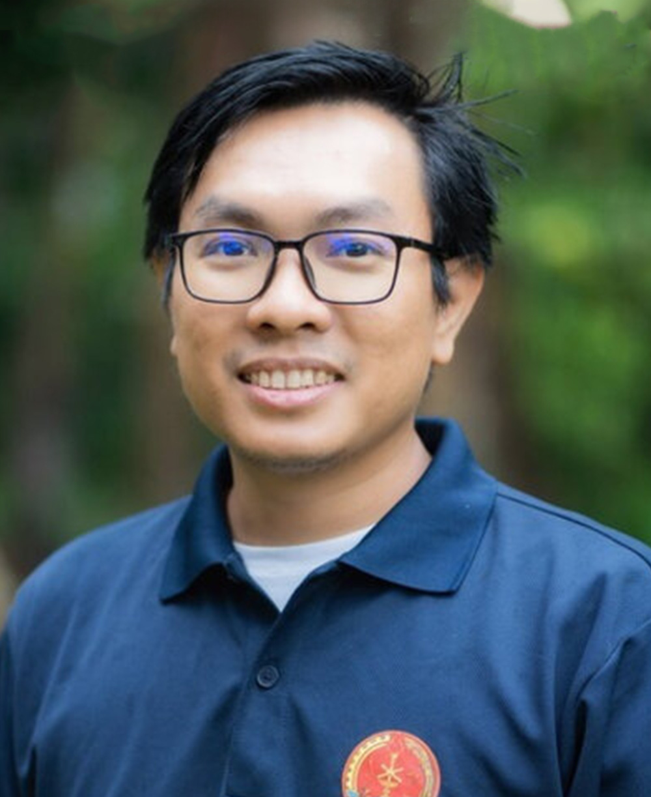
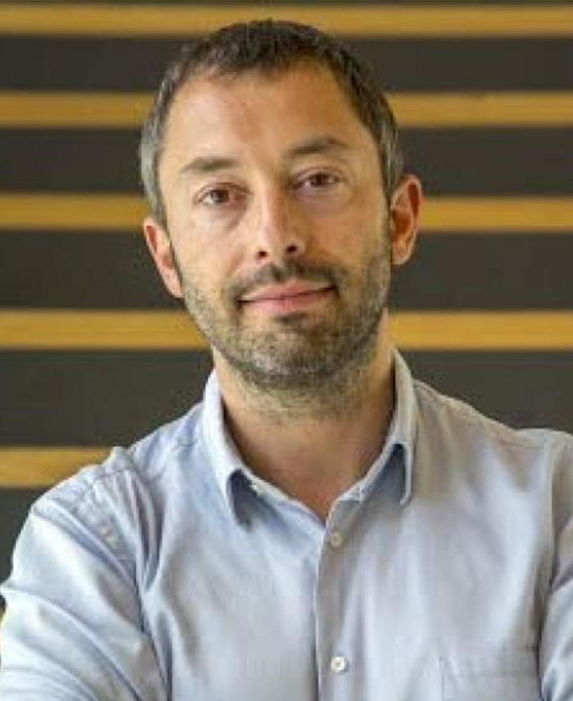
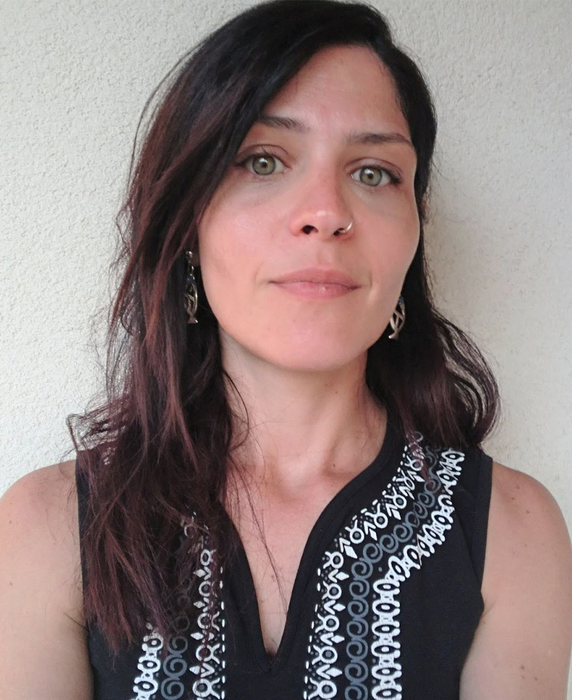
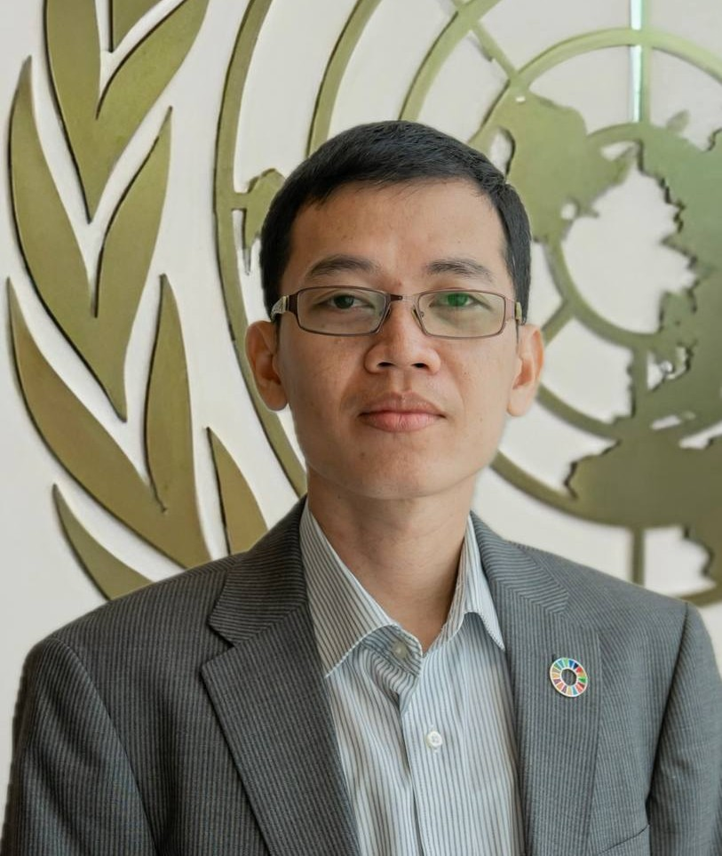
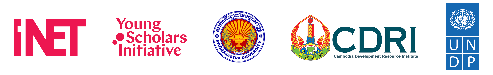

3rd Southeast Asia Economic Research and Development Conference
Date: October 30-31, 2025
Location: Paññāsāstra University of Cambodia, Siem Reap (PUCSR), Siem Reap, Cambodia
Join us for the premier conference in economics, bringing together leading researchers, practitioners, and industry experts to explore cutting-edge developments and future directions in Southeast Asia.
Latest Announcements
We would like to inform participants that the announcement of travel stipends and accommodation support has been delayed due to logistical issues on our end. Selected applicants and those not selected for these grants will be notified via email soon. Once the grants are announced, participants will be able to register to attend the conference. We appreciate your patience and understanding.
Important Dates
- Deadline for abstract submission: July 15, 2025.
- Notifications of acceptance will be sent out in the fourth week of July.
- Deadline for submission of full papers: September 30, 2025.
- Conference dates: October 30-31, 2025.
Southeast Asia stands at the crossroads of dynamic economic progress and significant socio-economic challenges. As one of the most vibrant and diverse regions globally, it has achieved remarkable strides in economic growth, regional integration, and poverty reduction. However, this growth has been accompanied by rising inequality, environmental degradation, technological disruptions, and increasing vulnerabilities to global uncertainties and climate change. This raises critical questions: How can Southeast Asia balance its rapid economic growth with inequality, ecological change, and digital transformation? Furthermore, how does research on Southeast Asia help us to understand the socio-economic rules that govern the world? Addressing these polycrises requires innovative, multidimensional solutions that transcend traditional economic paradigms. The 3rd Southeast Asia Economic Research and Development Conference serves as a platform for young scholars, researchers, policymakers, and practitioners to convene, exchange perspectives, and propose actionable solutions tailored to the region’s unique context.
Adopting an interdisciplinary and pluralist approach, the conference aims to foster dialogue that integrates economic theory, empirical analysis, and practical policy interventions. By leveraging insights from various disciplines and methodologies, participants will contribute to a deeper understanding of the complex interactions shaping Southeast Asia’s socio-economic landscape.
The conference seeks to inspire bold and collaborative research that rethinks growth, sustainability, and equity within the region. The papers presented will not only enrich academic discourse but also provide a foundation for evidence-based policymaking to support inclusive and sustainable development in Southeast Asia. We welcome submissions that explore, but are not limited to, the following themes:
Suggested Contribution Topics
- Economic growth, inequality, and inclusion
- Development and sustenance of social protection and social security system
- Health, and demographic transition
- Urban and regional economics
- Sustainability, ecology, natural resource management and climate resilience
- Food security and agrarian transformation
- Digital transformation, automation, and innovation
- Regional integration and trade
- Governance, institutions, and economic policy
- Labour economics and gender
- History of economic thought, economic history and path-dependency
- Interdisciplinary and pluralist approaches in economic analysis
Confirmed Keynote Speakers
Prof. Sovannroeun Samreth
Professor, Saitama University, Japan

Prof. Phanith ChouAssociate Professor of Environmental Economics, Royal University of Phnom Penh, Cambodia
Dr. Ratha Chiv
Executive Vice Chancellor, Paññāsāstra University of Cambodia, Siem Reap Campus, Cambodia
Dr. Daniel Yonto
Assistant Professor, Xi’an Jiaotong-Liverpool University, China

Prof. Olivier BargainProfessor of Economics, Bordeaux University, France

Dr. Maria C. Lo BueAssistant professor, University of Trieste, Italy
Mr. Shakeel Ahmad
Deputy Resident Representative, UNDP Cambodia

Dr. Rada KhoyEconomist, UNDP Cambodia
Mr. Theara Khoun
Socio-economic Policy Specialist, UNDP Cambodia
Conference Highlights
- 2 Days of engaging sessions and workshops
- 4+ Keynote presentations by experts in the field
- 10+ Parallel sessions covering diverse topics
- Networking opportunities with peers and experts
- Conference Dinner at a premier venue
Conference Program
Please download the conference program here.
Participant
- Abina VP (Institute for Social and Economic Change)
- Ahmad Sabrin (Institute for Climate Law and Sustainable Policy)
- Ashish Chouhan (Indian Institute of Technology Guwahati)
- Aung Than Oo (Tsinghua University)
- Bernard-Didier Benissan (University of Abomey-Calavi)
- Chanthol Hay (Pannasastra University)
- Clement Berthou (Université Grenoble Alpes/Institute for Banking Studies)
- Daniel Yonto (Xi’an Jiaotong-Liverpool University)
- Darlin Nay (Agricultural and Rural Development Bank)
- Deeksha Gulati (Solidar Suisse)
- Dhritiraj Sarma (Cotton University)
- Fahadz Lulu (Philippine Women’s University)
- Giulio Pavesi (University of Amsterdam)
- Hang Panha Hour (Agricultural and Rural Development Bank)
- Hizkia Yosias Polimpung (Monash University Malaysia)
- Jakkrya Sey (Cambodia Development Resource Institute)
- Jimi Rambo Arranchado (University of Canterbury)
- Jun Shen (Nanyang Technological University)
- Jyoti Thaksur (National Council of Applied Economic Research)
- Kean Muny Nhim (Royal University of Law and Economics)
- Keiji Ujikawa (Yokohama National University)
- Kosal Nith (Young Scholars Initiative and CDRI)
- Lingyan Zhu (Universiti Malaya)
- Mahjabin Rashid Lamisha (University of Dhaka)
- Maria C. Lo Bue (University of Trieste)
- Mek Ajay Sribhibhadh (London School of Economics and Political Science)
- Mohid Iftikhar (Lingnan University)
- Monineath Horn (Agricultural and Rural Development Bank)
- Ndirangu Ngunjiri (University of Nairobi)
- Nirmala Velan (GITAM University)
- Olivier Bargain (Bordeaux University)
- Panha Pich Sok (Agricultural and Rural Development Bank)
- Penghuy Ngov (Royal University of Phnom Penh)
- Phanith Chou (Royal University of Phnom Penh)
- Pieter Stek (Asia School of Business)
- Pirom Khiev (Cambodia Development Resource Institute)
- Pragati Pragati (Indian Institute of Technology)
- Pragyan Monalisa Sahoo (Utkal University)
- Prakashani Singh (Indian Institute of Technology Kanpur)
- Pranita Pathak (Savitribai Phule Pune University)
- Puja Biswas (Prasanta Chandra Mahalanobis Mahavidyalaya)
- Rada Khoy (UNDP Cambodia)
- Raksmey Ang (Cambodia Development Resource Institute)
- Rasyid Juhari (Asia School of Business)
- Ratha Chiv (Paññāsāstra University of Cambodia)
- Roop Chand Hindu (Universiti Malaya)
- Saddam Hossain Mondal (Heramba Chandra College)
- Sana Saleem (University of Brunei Darussalam)
- Sattwick Dey Biswas (Young Scholars Initiative)
- Sei Okamoto (Independent Researcher)
- Shakeel Ahmad (UNDP Cambodia)
- Sinoun Him (Ministry of Post and Telecommunications)
- Sivam Tamilaseluan (Universiti Malaya)
- Sokhimmarya Chea (Royal University of Law and Economics)
- Sokmoly Uon (Cambodia Development Resource Institute)
- Sovannroeun Samreth (Saitama University)
- Sreymeng Sros (Royal University of Law and Economics)
- Sreynoch Sak (Cambodia Development Resource Institute)
- Sushil Goswami (Gujarat National Law University)
- Swathi Krishna K U (Centre for Development Studies)
- Thach Bunroeun (National University of Battambang)
- Theara Khoun (UNDP Cambodia)
- Thirunaukarasu Subramaniam (Universiti Malaya)
- Thu Ha Thi Pham (Vietnam National University of Agriculture)
- Trey Silong (Royal University of Phnom Penh)
- Triny Lum (Asia School of Business)
- Ubaish Mon C.P. (University of Calicut)
- Vimuolea Hang (King’s College London)
- Vinay Kumar (Indian Institute of Technology Bhilai)
- Vitou Tes (Teacher Development Support Organization)
- Yesi Hendriani Supartoyo (National Research and Innovation Agency)
Registration Information
General participants are welcome to attend SAERD25. You can register to attend the conference here.
Participation is free of charge, but registration is required to secure your place.
Travel and Accommodation
We are delighted to welcome you to SAERD25 in Siem Reap, Cambodia. Below you will find practical information to help plan your stay.
Travel to Siem Reap
- Airport: Siem Reap–Angkor International Airport (SAI) is the main gateway to Siem Reap, with direct flights from Bangkok, Singapore, Kuala Lumpur, Ho Chi Minh City, and other regional hubs.
- From the Airport to the City:
- Taxi: USD 15–20 (30–40 minutes to the city centre)
- Hotel pick-up: Many hotels provide transfer services if arranged in advance.
Transportation in Siem Reap
- Tuk-tuks: The most common way to get around, usually USD 2–5 per trip within the city.
- Ride-hailing apps: PassApp and Grab are widely used for tuk-tuks and cars.
- To the Conference Venue (PUC Siem Reap Campus): About 10–15 minutes by tuk-tuk from most central hotels.
Accommodation
Siem Reap offers a wide variety of accommodation options for every budget. We encourage participants to book early as October is a busy season for tourists.
Additional Tips
- Visa: Most nationalities can obtain a tourist visa online (e-visa) or on arrival. Check requirements before travelling.
- Currency: US dollars are widely accepted; Cambodian riel is used for small transactions.
- Weather in October: Warm (25–32°C) with occasional rain showers—light clothing and an umbrella are recommended.
Contact
For inquiries about the conference, please contact us at saerdconf@gmail.com.
Supported by

We welcome collaboration to support young scholars in the region with travel-related expenses. If you are interested in supporting them, please reach out to us using the contact information above.